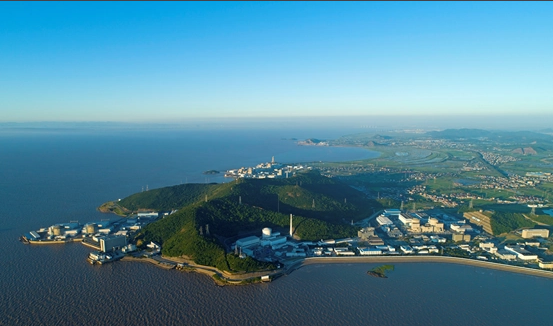

地理位置
中国浙江省嘉兴市海盐县
核电厂历史
秦山核电厂是中国核电的发源地，是中国核电的“红色根脉”和“红船”。秦山核电厂目前包括秦山核电厂、秦山第二核电厂以及秦山第三核电厂。第一期工程于1985年3月20日开工， 1991年建成并首次实现并网发电，之后正式投入运行，年发电量为17亿千瓦时。二期工程于1996年开工，扩建了2台60万千瓦发电机组，三期工程由中国和加拿大政府合作，建设两台 70万千瓦发电机组，于2003年建成。
堆形与数量
截止2024年11月，秦山一期1台320MWe级压水堆型核电机组、秦山二期4台650MWe级压水堆型核电机组、秦山三期2台700MWe 级重水堆型核电机组。
发电基本原理
秦山核电厂有两种运行机组，压水堆（秦山核电厂与秦山第二核电厂）与重水堆机组（秦山第三核电厂），两者的发电原理大不相同，以下是简要介绍：
压水堆（Pressurized Water Reactor）是采用高压水来冷却核燃料的一种反应堆，其工作原理为：主泵将120～160个大气压的一回路冷却水送入堆芯，把核燃料放出的热能带出堆芯，而后进入蒸汽发生器， 通过传热管把热量传给二回路水，使其沸腾并产生蒸汽，常在一回路水中加入硼酸，用以控制反应性的慢变化。之后，二回路产生的高压蒸汽会推动汽轮机发电，再经过冷凝器和预热器进入蒸汽发生器，完成二回路水循环。 压水堆的工作原理图如下所示：

图1：压水堆示意图
重水堆（Heavy Water Reactor）是一种利用重水作为中子减速剂和冷却剂的核反应堆，其工作原理为：一回路系统中，重水作为冷却剂流经反应堆堆芯，带走核燃料裂变释放的热量。高温高压的重水随后进入蒸汽发生器， 通过传热管将热量传递给二回路的普通水，使其沸腾产生蒸汽。蒸汽推动汽轮机发电，实现核能向电能的转化。反应堆内的重水还同时充当中子减速剂，通过减慢中子的速度来提高核裂变的效率。二回路中的蒸汽经过汽轮机后进入 冷凝器冷却，再次被送回蒸汽发生器完成循环。在这一过程中，重水始终保持在一回路中，既确保了冷却效率，又有效防止了中子泄漏。重水堆以其良好的燃料利用率和高效的热能传递能力成为核电技术的重要组成部分。重水堆的工作原理图如下所示：
图2：重水堆示意图
荣誉与贡献
秦山核电厂成功实现了从“引进”到“自主化”的跨越，掌握了核燃料生产、核反应堆运行管理等关键技术，并成为全球核电技术合作的重要伙伴。秦山核电厂是中国核电发展的重要里程碑，截至目前，其累计 发电量已突破7500亿千瓦时，相当于减排了27吨的二氧化碳（植树造林270个西湖景区），为推动中国核电自主化能力以及清洁能源的发展作出了卓越贡献。作为中国核电领域的先锋，秦山核电厂屡获殊荣，成为行业标杆。其中，“秦山30万千瓦核电厂设计与建设”项目于1997年荣获 国家科技进步奖特等奖，而秦山30万千瓦核电站一回路主管道安装技术更是斩获中国安装协会颁发的科技成果一等奖。此外，由中国核工业第二二建设公司和中国核工业第二三建设公司联合申报的“秦山核电站 300MW核岛工程”项目，凭借卓越的施工质量，于1995年摘得中国建筑工程领域的最高荣誉——鲁班奖。总之，秦山核电厂为中国东部地区持续提供清洁、高效的能源，大大缓解了华东地区长期以来的电力紧张 问题，对华东区域乃至全国的经济和社会发展产生了深远影响，被誉为“国之光荣”。
图3：秦山核电厂全景
2024年4月，中核集团秦山核电厂首次利用核电商用堆批量生产了某种重要的同位素，这个同位素具有非常高的医用与科研价值， 请问这个同位素是什么？
参考文献
1. 俞冀阳.核工程基本原理.北京：清华大学出版社，2018
2. 俞冀阳.核电厂系统与运行.北京：清华大学出版社，2016
3. 杨沐岩.秦山核电开拓同位素生产新路径，2024
4. 2024年中国核电行业研究报告，2024
5. 中国科学院上海应用物理研究所.浅谈沸水堆与压水堆，2011
6. 张晶，李厚文.秦山三期重水堆核电站流出物氚排放的比较分析，2009
7. 王鼎锉.秦山核电厂概况，1984
8. 国家核安全局网站